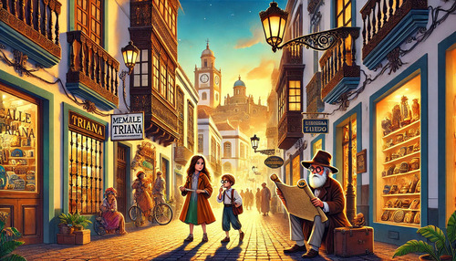
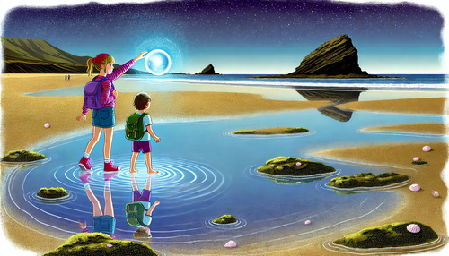
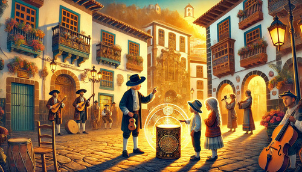
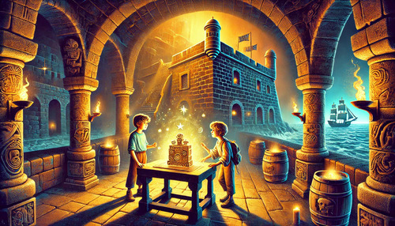
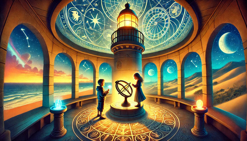

Viaje por Gran Canaria
Prólogo
Vegueta

Triana
San Telmo

Las Canteras
Auditorio Alfredo Kraus
Jardín Botánico
Cumbres de Gran Canaria
Mercado del Puerto
Las Dunas de Maspalomas
La Catedral de Santa Ana

El Pueblo Canario

El Castillo de la Luz
El Puerto de Las Palmas
El Barranco Guiniguada
La Plaza de Santa Ana
El Confital
El Museo Élder
Arucas
Teror

El Faro de Maspalomas
Epílogo